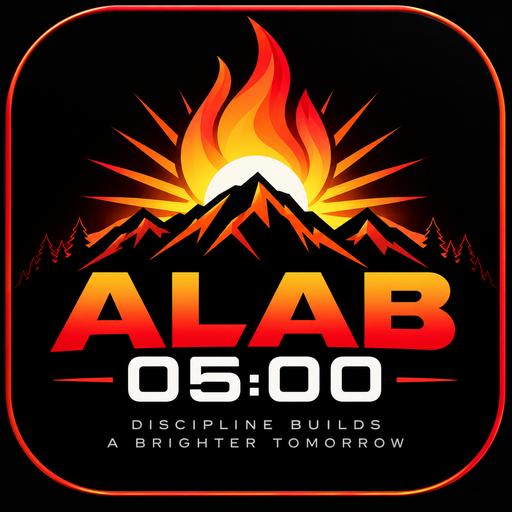

ALAB 05:00
Youth Strength & Resilience Project
Discipline Starts Before Sunrise.
OPEN ALAB TRACKER →Your member login, workout, goals and progress remain in the existing ALAB tracker. This launcher does not store your PIN or personal data.